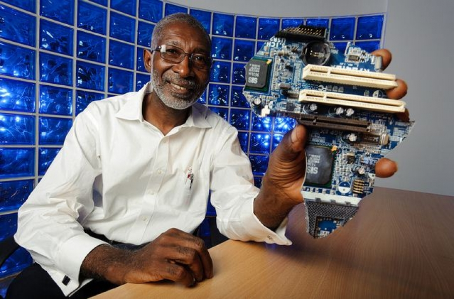

Prof. Nii Narku Quaynor
Africa's Father of the Internet

Professor Quaynor
Here's a timeline of Professor Quaynor's life:
- 1949 - Born in Accra, Ghana, West Africa. And he attended Adisadel College and Achimota School.
- 1973 - Prof. Quaynor graduated in Engineering Science from Dartmouth College in 1972 and received a Bachelor of Engineering degree from the Thayer School of Engineering there in 1973.
- 1974 - Studied Computer Science and obtained an Master of Science degree from the State University of New York at StonyBrook.
- 1977 - Obtained an Ph.D. from the State University of New York at StonyBrook.
- 1994 - Prof. Quaynor established the first internet service provider in Ghana and West Africa, operated by Network Computer Systems Ltd. He then assisted in implementing the transformational new technology throughout sub-Saharan Africa
- 2000 - Dr. Quaynor was elected as the At-Large Director of the African region to the ICANN Board. And served until June, 2003.
- 2001 - He was the founding chairman of AFRINIC, the regional Internet registry (RIR) for Africa.
- 2007 - In December 2007, Quaynor was awarded the Jonathan B. Postel Service Award from the IETF (The Internet Engineering Task Force).
- 2013 - On 26 June 2013, he was inducted into the Internet Hall of Fame by the Internet Society.
- 2015 - He was awarded the 2015 ICANN Multi-stakeholder Ethos Award together with Cheryl Langdon Orr.
“Africa will miss a great development opportunity in much the same way Africa lost on the industrial revolution, unless serious and truly committed efforts are made by Africa to address the rapid expansion on the internet-user gap between Africa and industrialised countries”
If you'd like to read more about Prof. Nii Narku Quaynor: Wikipedia